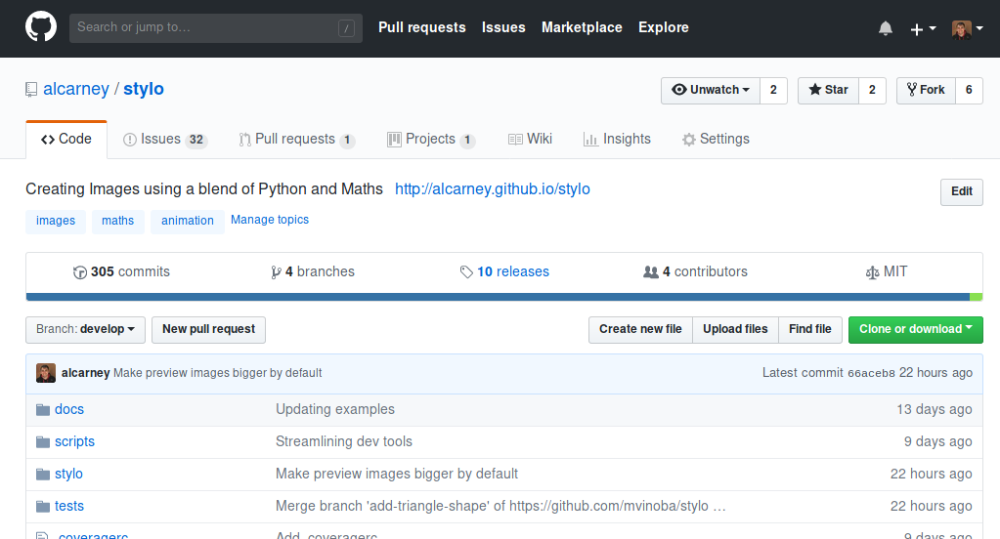

Fork the Repository¶
Forking the repository is often the first step in making a contribution - but not always. You do not need a fork if you want to:
- Open an Issue
- Make minor adjustments to the documentation e.g. fixing typos, rewording paragraphs.
You do need a fork if you want to:
- Contribute code
- Make larger changes to the documentation e.g. writing new articles
Before We Start¶
In order to fork the repository you need to:
Forking the Repository¶
{kind=link}
- Find the main repository on GitHub
- Click the
Forkbutton that should be just underneath your profile picture. - If you are a member of an organisation GitHub will ask you where you want to Fork to repository to, you should probably choose your personal account.
GitHub will redirect you to your own copy of the repository we will then use git to copy (clone) your fork onto your own machine.
- Click the Green
Clone or downloadbutton that should be just above the list of files on the right. A popup box should then appear and provide you with the address of your repository, highlight the address and copy it. - Open your terminal application and navigate to a folder where you want the repository to be located and run the following command.
$ git clone <your_repository_url>
Git will then download the repository onto your machine and store it in a folder
called stylo.
That’s it! If everything went smoothly you will have successfully forked the repository!
Next Steps¶
Forking the repository is just the first step on the journey into making your first major contribution, here are some tasks that you will want to do next.
Todo
Link to the various tutorials when they exist.